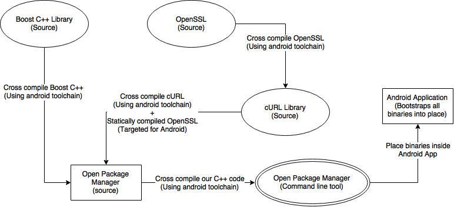
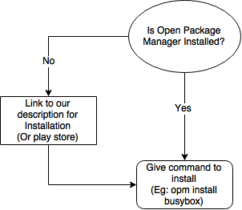

For the User
We aim to help users install their favorite command line tools without going through the hassle of cross compiling code themselves. Although, cross compilation could be fun sometimes!! (Not really)
This is the flow a user would have to go through before our package manager existed.
The flow users would go through once they obtain our application.
We have the following features available on Open Package Manager currently.
List: List all the available packages.
Search: Search for a particular package.
Install: Install the package you require.
Upgrade: Upgrade all packages that have newer versions.
Remove: Remove an unwanted application.